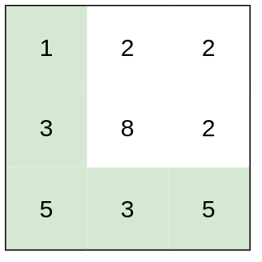
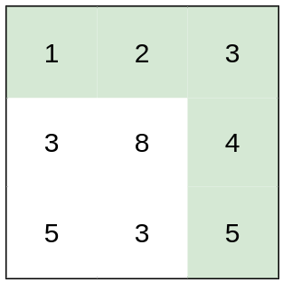
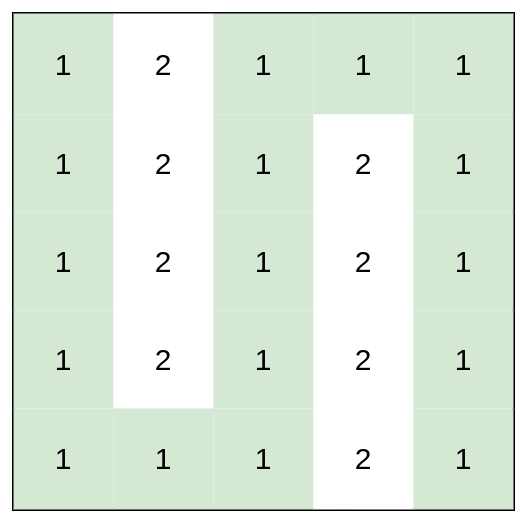

1631. 最小体力消耗路径
边按高度差从小到大逐条合并并查集：起点终点刚连通时，那条边的差就是最小体力。
思路
- 答案是「路径上最大高度差」的最小值：等价于只走高差 ≤ k 的格子，求最小的可行 k。
- 全部相邻格子的边按差排序，从小到大往并查集里加。
- 加完某条边后起点、终点同根 ⇒ 这条边的差就是答案（Kruskal 式）。
- 单格矩阵起点即终点，直接返回 0。
图解
最优解
1import java.util.*;2 3class Solution {4 private int[] fa;5 6 public int minimumEffortPath(int[][] heights) {7 int m = heights.length, n = heights[0].length;8 fa = new int[m * n];9 for (int i = 0; i < fa.length; i++) fa[i] = i;10 // 收集所有相邻格子的边，按高度差从小到大排序11 List<int[]> edges = new ArrayList<>();12 for (int i = 0; i < m; i++) {13 for (int j = 0; j < n; j++) {14 if (i + 1 < m) edges.add(new int[]{Math.abs(heights[i][j] - heights[i + 1][j]), i * n + j, (i + 1) * n + j});15 if (j + 1 < n) edges.add(new int[]{Math.abs(heights[i][j] - heights[i][j + 1]), i * n + j, i * n + j + 1});16 }17 }18 edges.sort(Comparator.comparingInt(e -> e[0]));19 int end = m * n - 1;20 for (int[] e : edges) {21 union(e[1], e[2]);22 // 边按差从小到大加：起点终点一连通，这条边的差就是答案23 if (find(0) == find(end)) {24 return e[0];25 }26 }27 return 0; // 单格矩阵：起点就是终点28 }29 30 private int find(int x) {31 while (fa[x] != x) { fa[x] = fa[fa[x]]; x = fa[x]; } // 路径压缩32 return x;33 }34 35 private void union(int x, int y) { fa[find(x)] = find(y); }36}题目
你准备参加一场远足活动。给你一个二维 rows x columns 的地图 heights ，其中 heights[row][col] 表示格子 (row, col) 的高度。一开始你在最左上角的格子 (0, 0) ，且你希望去最右下角的格子 (rows-1, columns-1) （注意下标从 0 开始编号）。你每次可以往 上，下，左，右 四个方向之一移动，你想要找到耗费 体力 最小的一条路径。
一条路径耗费的 体力值 是路径上相邻格子之间 高度差绝对值 的 最大值 决定的。
请你返回从左上角走到右下角的最小 体力消耗值 。
示例 1：

输入：heights = [[1,2,2],[3,8,2],[5,3,5]] 输出：2 解释：路径 [1,3,5,3,5] 连续格子的差值绝对值最大为 2 。 这条路径比路径 [1,2,2,2,5] 更优，因为另一条路径差值最大值为 3 。
示例 2：

输入：heights = [[1,2,3],[3,8,4],[5,3,5]] 输出：1 解释：路径 [1,2,3,4,5] 的相邻格子差值绝对值最大为 1 ，比路径 [1,3,5,3,5] 更优。
示例 3：

输入：heights = [[1,2,1,1,1],[1,2,1,2,1],[1,2,1,2,1],[1,2,1,2,1],[1,1,1,2,1]] 输出：0 解释：上图所示路径不需要消耗任何体力。
提示：
rows == heights.lengthcolumns == heights[i].length1 <= rows, columns <= 1001 <= heights[i][j] <= 106
题面取自力扣当前版本。
数据快照 2026-11-04。题面版权归力扣所有，本站点仅供本人学习使用，请勿对外发布。